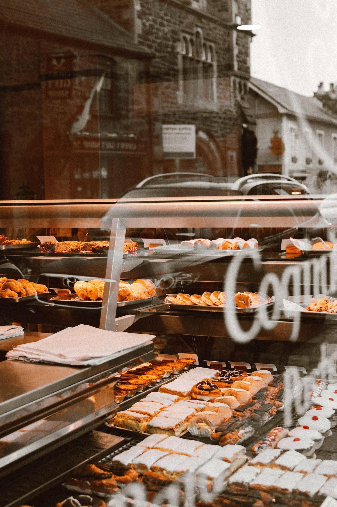

Au fournil, le froid ne sert pas seulement à conserver : il pilote la pâte. Bloquer une pousse, tourer un feuilletage au bon degré, refroidir une crème pâtissière dans les temps, stocker des viennoiseries crues surgelées — chaque usage appelle un équipement différent. Voici comment ne pas se tromper de machine, ni de budget.

C'est la première source d'erreur dans un projet de fournil. Les trois équipements font du froid, mais aucun ne remplace l'autre.
Elle maintient une température stable pour stocker : beurre de tourage, crème liquide, œufs, levure, garnitures, fruits, pâtisseries finies. C'est un volume de rangement, pas un outil de production. Elle ne fait pas descendre vite une préparation chaude et ne pilote pas l'hygrométrie de la pâte.
Elle enchaîne automatiquement blocage au froid, réveil progressif et étuve avec hygrométrie régulée. Vous façonnez le soir, vous programmez, la pâte est prête à enfourner à 4 h du matin. C'est l'outil qui supprime les nuits blanches et lisse la production sur la semaine.
Elle fait passer une crème, un flan ou un appareil de +63 °C à +10 °C en moins de deux heures, ou surgèle à -18 °C à cœur. Obligatoire en pratique dès que vous produisez à l'avance : c'est elle qui protège vos crèmes, et elle qui évite que votre chambre froide ne remonte de 5 °C d'un coup.
Beaucoup de fournils fonctionnent avec les trois : une positive pour les matières premières et les produits finis, une chambre de pousse pour la panification, une cellule pour la pâtisserie — et une chambre froide négative dès que le stock de viennoiseries crues devient important.
Bloquer une pâte, c'est ralentir l'activité de la levure sans la tuer. La fenêtre est étroite et l'hygrométrie compte autant que le thermomètre.
Entre 0 et +3 °C, l'activité fermentaire devient quasi nulle : les pâtons attendent sans se sur-développer. Entre +4 et +8 °C, la fermentation continue lentement — c'est le domaine de la pousse lente contrôlée, qui développe les arômes sur 12 à 24 heures. Au-delà de +10 °C, vous ne maîtrisez plus rien : les pâtons partent, retombent, et la mie s'en ressent.
Un évaporateur classique de chambre froide assèche l'air. En quelques heures, les pâtons croûtent en surface et la levée est bridée à l'enfournement. Deux parades : filmer systématiquement les échelles, ou choisir un équipement à hygrométrie régulée (75 à 85 % d'humidité relative) avec un évaporateur à grande surface et un faible écart de température. C'est précisément ce qui distingue une chambre de pousse d'une chambre froide.
Même logique en pâtisserie : un feuilletage se toure entre +4 et +6 °C. Trop froid, le beurre casse et le feuilletage se déchire ; trop chaud, il fond dans la détrempe. Une petite chambre à consigne stable, réservée au tourage, change la régularité du produit fini bien plus qu'un four supplémentaire.
Croissants, pains au chocolat et brioches sont façonnés puis disposés sur plaques, sans pousse préalable pour la surgélation crue non poussée.
Passage en cellule de surgélation : -18 °C à cœur en quelques heures. Les cristaux restent fins et n'éclatent pas le réseau de gluten ni les couches de beurre.
Mise en sachet ou en bac hermétique, étiquetage date et référence. Sans emballage, le produit se dessèche et prend le goût du congélateur en quelques semaines.
Chambre froide négative à -18 °C ou -20 °C, stable. C'est le stockage longue durée qui vous permet de sortir la quantité juste chaque matin, sans surproduire.
Point technique important : contrairement au froid positif, une chambre froide négative exige un plancher isolé, sans quoi la dalle gèle, se soulève et fissure. Elle demande aussi une isolation plus épaisse et un groupe plus puissant, ce qui explique l'écart de prix. Tous les détails de mise en œuvre figurent sur notre page installation d'une chambre froide.
Un fournil de quartier s'équipe rarement d'un seul bloc : on additionne une positive, souvent une négative, et un équipement de fermentation. Voici les ordres de grandeur en matériel seul, hors pose.
| Équipement | Usage au fournil | Matériel (HT) | Pose (en sus) |
|---|---|---|---|
| Positive compacte 4 à 6 m³ | Beurre, crèmes, œufs, garnitures | 2 500 à 4 000 € | +15 à 30 % |
| Positive standard 6 à 12 m³ | Matières premières + produits finis | 3 500 à 6 500 € | +15 à 30 % |
| Négative compacte | Viennoiseries crues surgelées | 5 000 à 8 000 € | +15 à 30 % |
| Négative standard | Gros stock, production d'avance | 7 000 à 12 000 € | +15 à 30 % |
L'entretien annuel se situe entre 200 et 500 € selon l'équipement : nettoyage des condenseurs, contrôle d'étanchéité du circuit, vérification des sondes. C'est un poste à ne pas sacrifier — un condenseur encrassé peut faire grimper la consommation de 20 à 30 %, et un fournil tourne 6 ou 7 jours sur 7. Pour comparer toutes les configurations, voyez notre guide des prix chambre froide 2026 ; si votre trésorerie est tendue à l'ouverture, la location ou le leasing lisse l'investissement sur 36 à 60 mois.
Entre le four, le pétrin, la diviseuse et le laminoir, la place manque presque toujours. Quelques principes évitent les erreurs coûteuses.
Un four à sole rayonne en continu. Une chambre froide installée à moins d'un mètre voit son groupe tourner sans relâche : consommation en hausse et durée de vie du compresseur en baisse. Si la place manque, préférez un groupe à distance déporté en local technique ou en toiture — plus silencieux au fournil, en prime.
La largeur de porte se calcule sur vos échelles à plaques, pas sur un carton. Une échelle 400 x 600 mm chargée demande un passage réel confortable et un seuil affleurant, sans ressaut. Si le local est biscornu (sous-pente, poteau, cave voûtée), une chambre froide sur mesure en panneaux modulaires s'ajuste au centimètre.
Enfin, n'oubliez pas la traçabilité : relevés de température, enregistreur, procédure en cas de panne. Les obligations applicables aux métiers de bouche sont résumées dans notre page normes et HACCP, et le dimensionnement pas à pas dans quelle taille de chambre froide choisir.
Décrivez votre production, votre local et vos contraintes en 2 minutes : un spécialiste du froid de votre région vous rappelle avec un devis précis sous 24 h. Gratuit, sans engagement.